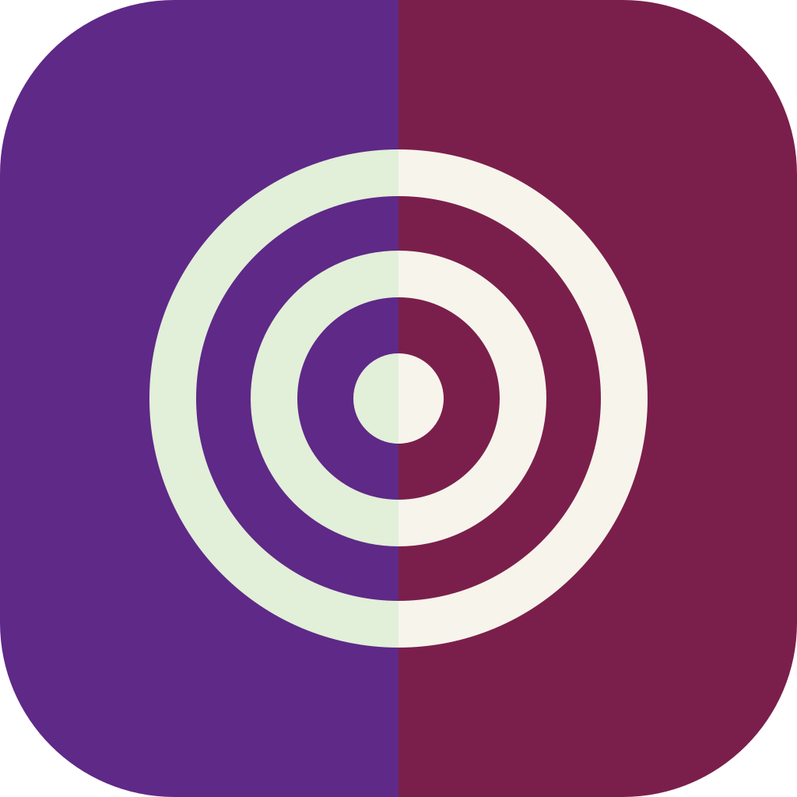
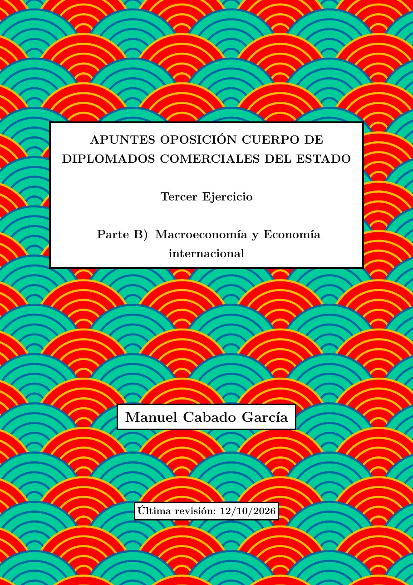
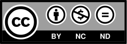

Apuntes para la oposición al Cuerpo de Diplomados Comerciales del Estado

AppTCEE · DCE
Macroeconomía y Economía Internacional
Tercer Ejercicio · Parte B · Oposición a Diplomados Comerciales del Estado
Prefacio

El libro recorre la macroeconomía de la contabilidad nacional y el modelo de oferta y demanda agregada a las teorías del consumo, la inversión y el dinero, la política monetaria y fiscal, la inflación, el mercado de trabajo, los ciclos y el crecimiento, y dedica su segunda mitad a la Economía Internacional: comercio y política comercial, integración económica, balanza de pagos, mercado de divisas e integración monetaria. Cada tema sigue el epígrafe oficial y se ajusta a los 20 minutos del examen, con el tiempo de cada apartado marcado para ensayar la exposición.
Más detalles sobre su origen en Sobre estos apuntes.
Cómo está organizado cada tema
- Título. En la barra lateral aparece un título corto y, al abrir el tema, el epígrafe oficial completo del programa.
- Apartados con su tiempo de exposición. Cada apartado lleva un reloj de arena
 con los minutos que conviene dedicarle; entre todos suman 20 minutos. El último apartado, las conclusiones, lleva el reloj ya vacío
con los minutos que conviene dedicarle; entre todos suman 20 minutos. El último apartado, las conclusiones, lleva el reloj ya vacío  .
. - Figuras, cuadros y ecuaciones, numerados por tema (Figura 3.1). Las referencias del texto son enlaces: al pasar el ratón por encima se ve la figura o la ecuación sin perder el sitio.
- Notas al pie con matices, intuiciones y referencias. También se leen pasando el ratón por encima del número.
- Apéndice con los desarrollos matemáticos y teorías que no caben en la exposición oral.
- Términos del glosario de este tema, al final, antes de la bibliografía.
- Bibliografía completa del tema.
Cómo moverse por la web
- Barra lateral izquierda: la lista de los 22 temas. En el móvil se abre con el botón ☰ de arriba.
- «En esta página», a la derecha: los apartados del tema que estás leyendo, con su tiempo. El apartado en el que estás se marca en color.
- Buscador (la lupa de arriba): busca en todos los temas a la vez.
- Enlace a cada apartado: al pasar el ratón por un título aparece un pequeño icono de enlace para copiar la dirección exacta de ese apartado.
- Tema anterior y siguiente: al final de cada tema, para seguir leyendo en orden.
- Modo noche: el botón 🌙 de arriba cambia a fondo oscuro para leer de noche.
Glosario
El glosario reúne todos los términos de la Parte B, ordenados alfabéticamente, con una definición breve y un enlace al tema en el que se estudian. Tiene su propio buscador y una barra de letras para saltar directamente. Desde cada tema, los términos de la caja final llevan a su definición; al pasar el ratón por encima se lee sin salir del tema.
Versión en PDF
El libro completo está también en PDF, con el mismo contenido que la web, para leerlo sin conexión o imprimirlo. La web y el PDF se actualizan a la vez.
Licencia
Estos apuntes son gratuitos y se distribuyen bajo licencia Creative Commons BY-NC-ND 4.0: se pueden compartir libremente citando al autor, pero no venderlos ni distribuir versiones modificadas.
